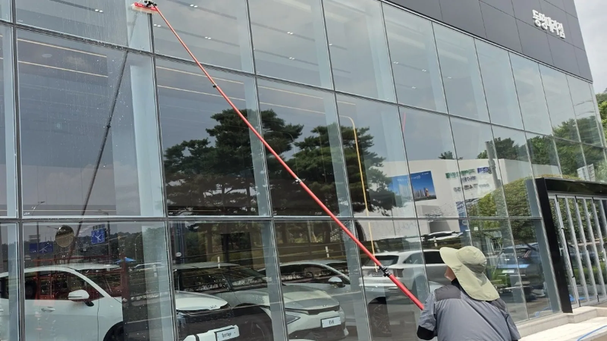
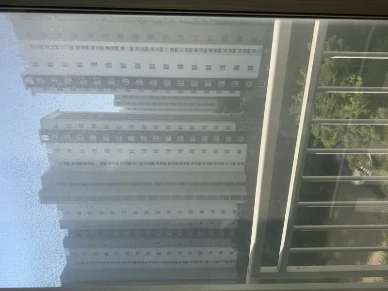
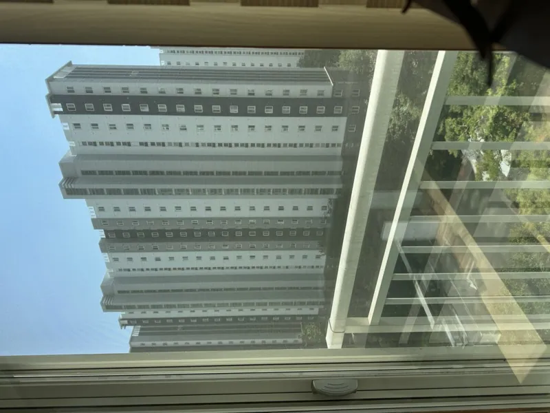
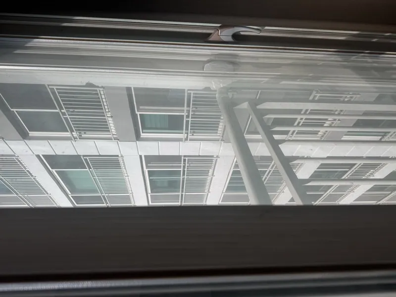
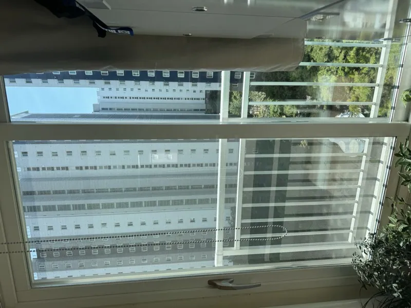
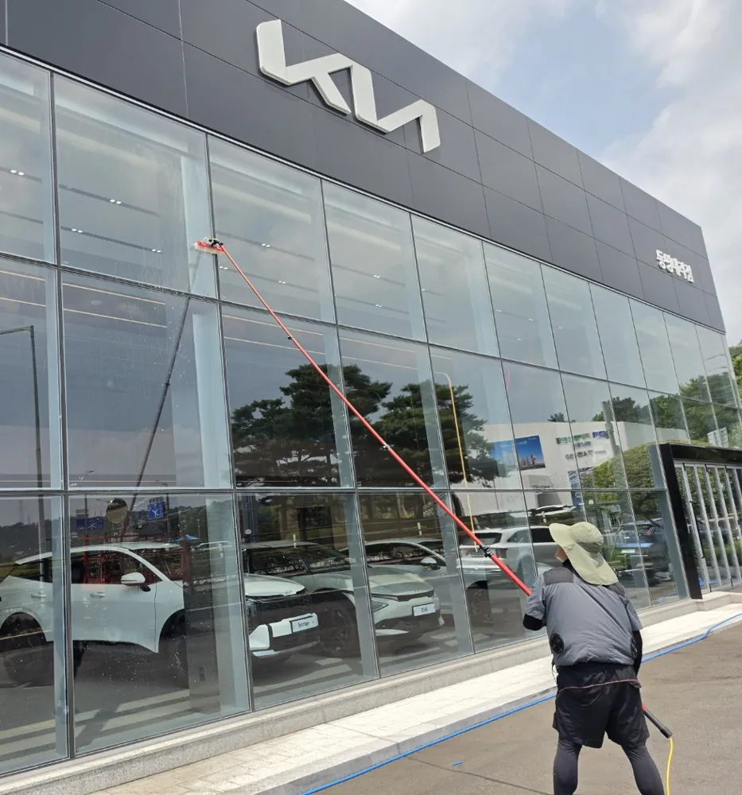
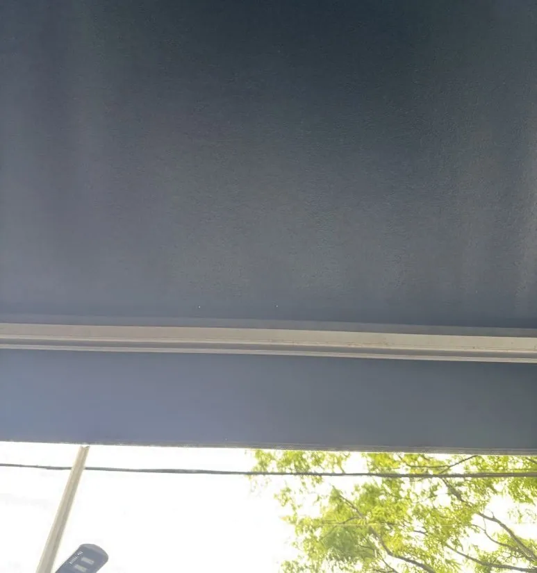
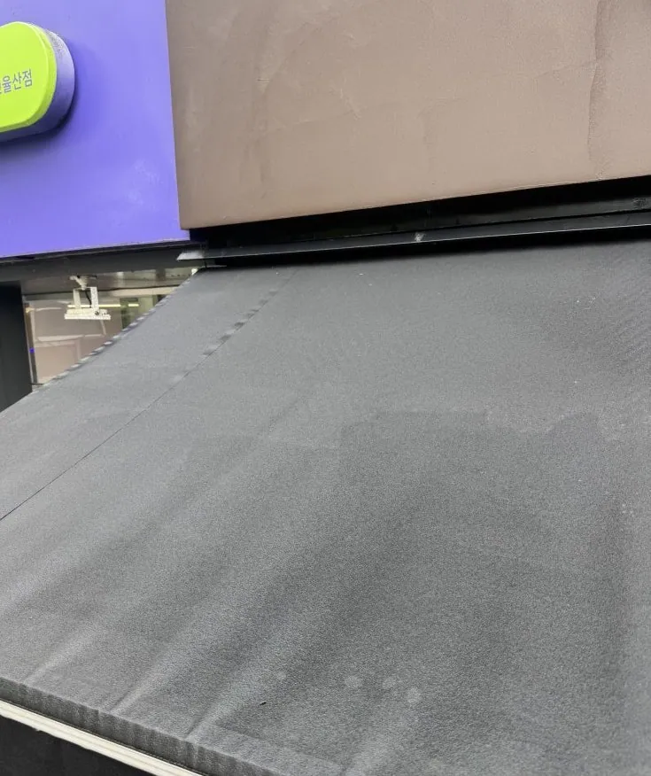

2024년 7월에 시작해 200건 넘게 작업했습니다. 사람을 보내지 않고 제가 갑니다. 사진과 주소를 보내주시면 그날 안에 견적을 드립니다.
아파트 거실 외창 · 상가 통유리 · 사무실
퓨어워터 봉으로 닦습니다. 정수한 물만 쓰기 때문에 세제가 남지 않고, 마른 뒤에 물자국이 생기지 않습니다. 2~3층까지는 사다리를 놓지 않고 바닥에서 작업합니다.
가장 많이 부르시는 건 거실 외창만 하는 작업입니다. 보통 두세 시간이면 끝납니다. 가게 오픈 앞두고 유리에 남은 시트지나 끈끈이가 있으면 그것도 같이 떼어냅니다.


아파트 거실 외창. 같은 자리에서 찍었습니다. 실제 작업 현장 사진이며 보정하지 않았습니다.


거실 전면창. 창이 넓을수록 차이가 크게 보입니다.
시작 가격입니다. 창 개수와 오염 정도, 층수에 따라 달라집니다.

상가 통유리는 폼을 올려 불린 뒤 봉으로 훑어냅니다. 사다리를 놓지 않고 바닥에서 작업합니다.
카페 · 음식점 · 상가
전용 세제를 폼으로 올려 이끼와 묵은 때를 충분히 불린 다음 고압으로 씻어냅니다. 천을 상하게 하지 않으면서 색이 돌아옵니다.
어닝은 윗면에 때가 쌓입니다. 아래에서 올려다보면 멀쩡해 보여도 위에서 보면 다릅니다. 장마가 지나고 나면 검게 번진 얼룩과 이끼로 문의가 가장 많습니다.


광양·순천 상가 어닝 작업.
어닝 크기와 이끼·얼룩 정도에 따라 달라집니다.
상가 간판 전면 · 프레임
간판 전면과 프레임에 앉은 먼지, 매연, 빗물이 흘러내린 자국을 지웁니다. 재질을 먼저 보고 압력과 세제를 맞춥니다. 조명 간판은 전원을 내린 뒤에 합니다.
상가 · 주택 · 소형 건물
외벽은 재질에 맞춰 세제와 압력을 정합니다.
노후 건물은 지워지는 오염과 이미 변색돼서 안 지워지는 부분을 작업 전에 구분해서 말씀드립니다. 해결 안 되는 걸 된다고 하면 서로 곤란해집니다. 현장을 보고 어디까지 가능한지 먼저 알려드립니다.
전남 여수시 · 순천시 · 광양시
조례동·연향동·신대지구를 비롯해 시내 전 지역 나갑니다. 아파트 거실 외창과 전체 유리창, 상가 통유리, 카페 어닝, 간판, 외벽청소를 합니다.
웅천·신기동·여천 등 전 지역 나갑니다. 바다가 가까워 염분과 먼지가 같이 앉는 현장이 많습니다. 보통 유리창과 어닝을 같이 하시는 편입니다.
사업장이 광양읍에 있어 중마동·광양읍은 당일 방문이 가능합니다. 유리창, 어닝, 간판, 외벽 전부 합니다.
제목을 누르면 답이 열립니다
거실 외창만 하시면 18만원부터, 34평 전체 유리창은 34만원부터입니다. 창 개수와 오염 정도, 층수에 따라 달라지니 사진을 보내주시면 정확히 알려드립니다.
가능합니다. 가장 많이 부르시는 작업입니다. 거실 외창만이면 보통 두세 시간이면 끝납니다.
층수와 창 구조에 따라 다릅니다. 퓨어워터 봉으로 바닥에서 닿는 높이는 2~3층까지이고, 그보다 높으면 실내에서 손이 닿는 범위를 확인한 뒤에 말씀드립니다. 사진을 보내주시면 가능한지부터 알려드립니다.
면적과 층수에 따라 현장 견적입니다. 사진과 주소를 주시면 금액과 걸리는 시간을 같이 알려드립니다.
1동 기준 15만원부터입니다. 어닝 크기와 이끼·얼룩 정도에 따라 달라집니다.
폼으로 충분히 불린 뒤 고압으로 씻으면 대부분 빠집니다. 다만 천 자체가 삭아서 변색된 부분은 청소로 돌아오지 않습니다. 사진을 보고 어디까지 되는지 먼저 말씀드립니다.
간판 1면 12만원부터입니다. 재질을 먼저 확인하고 압력과 세제를 맞춥니다. 조명 간판은 전원을 내린 뒤에 작업합니다.
같이 합니다. 시트지와 끈끈이를 떼어낸 뒤 유리를 닦습니다. 오픈 날짜를 말씀해 주시면 맞춰서 갑니다.
전부는 아닙니다. 쌓인 오염은 빠지지만 자재가 변색된 부분은 그대로입니다. 현장을 보고 지워지는 범위와 안 되는 범위를 작업 전에 구분해서 알려드립니다.
사진, 주소, 원하시는 날짜 세 가지면 됩니다. 전화나 카카오톡으로 보내주시면 그날 안에 답을 드립니다.
유리창은 비가 오면 닦아놔도 다시 더러워져서 날짜를 옮깁니다. 어닝·외벽 고압세척은 비가 약하면 할 수 있는 경우가 있어 당일 상황을 보고 말씀드립니다.
가능합니다. 상가와 사무실은 주기를 정해놓고 가는 곳이 여럿 있습니다. 주기와 범위를 말씀해 주시면 금액을 알려드립니다.
됩니다. 사업자등록번호 205-16-52711로 등록된 사업장입니다.
주로 다니는 곳은 여수·순천·광양입니다. 인근 지역은 일정과 거리를 보고 가능한지 말씀드리니 먼저 연락 주십시오.
사진 · 주소 · 원하는 날짜
이 세 가지만 보내주시면 그날 안에 답을 드립니다. 전화도 카카오톡도 제가 직접 받습니다.